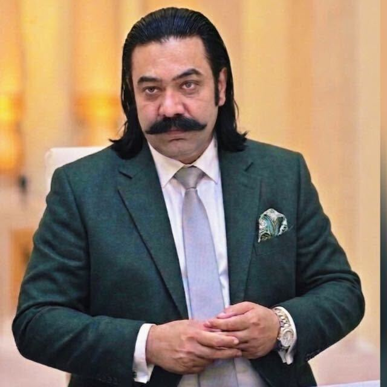

Our leadership
YPP Leadership
Meet the leaders driving Youth Parliament Pakistan's mission for civic engagement and youth empowerment.

Chairman
Abrar Ul Haq
"The future of Pakistan will be shaped by those who have the courage to lead, the wisdom to serve, and the determination to make a difference."
It is with great pride and optimism that I welcome you to the Youth Parliament of Pakistan, a platform established to inspire, empower, and engage young people in shaping the future of our nation.
Pakistan's greatest asset is neither its geography nor its resources. It is its youth. With one of the largest youth populations in the world, our country possesses an extraordinary opportunity to harness the energy, creativity, and potential of a new generation committed to building a stronger, more peaceful, and more prosperous Pakistan.
The Youth Parliament of Pakistan was founded on a simple yet powerful belief: that young people must not only be heard but also be empowered to lead. For nearly two decades, YPP has served as a national platform for nurturing leadership, promoting democratic values, encouraging civic participation, and developing responsible citizens who are committed to public service and national progress.
Throughout our journey, thousands of young people from every province and region of Pakistan have participated in parliamentary simulations, leadership programs, policy dialogues, community initiatives, humanitarian efforts, and international engagements. Their achievements demonstrate the remarkable potential of Pakistan's youth when provided with the right opportunities, guidance, and support.
At YPP, we believe leadership is rooted in character, integrity, compassion, and service. Our mission extends beyond developing future leaders; we strive to cultivate active citizens who understand their responsibilities, respect diversity, uphold democratic principles, and contribute meaningfully to society.
I have every confidence that the youth of Pakistan are ready to embrace this responsibility and lead our nation toward a brighter future.
Let us continue this journey together.
With best wishes,
Abrar-ul-Haq
Founder & Chairman
Youth Parliament of Pakistan
Humanitarian | Education Advocate | Youth Development Champion

Vice Chairman
Dr. Abdul Rahim Babar Dogar
"A distinguished academic professional, visionary youth leader, and dedicated public servant with over two decades of impactful service."
Dr. Babar Dogar has served as Vice Chairman of the Youth Parliament of Pakistan, bringing extensive experience in academia, leadership development, and civic engagement to the organization.
His commitment to empowering young Pakistanis through education, mentorship, and community service has been instrumental in shaping YPP's programs and vision for national progress.

President
Ubaid-Ur-Rehman Qureshi
"The youth of Pakistan are not just the future but the driving force of today."
The Youth Parliament of Pakistan (YPP) serves as a dynamic platform to empower young voices, cultivate leadership, and foster civic responsibility. Our mission is to bridge the gap between youth and policymaking, ensuring that young people play an active role in shaping the country's future.
As an advocate for meaningful youth engagement, Being President, I had honor to represent Pakistan on global platforms, fostering partnerships with international organizations, including the United Nations, Commonwealth, European Union, and British Institutions.
As we move forward, I invite all young changemakers to join hands in creating a more inclusive, progressive, and empowered Pakistan. Together, we can turn aspirations into actions and challenges into opportunities.
General Secretary
Hammad Malik
"As the General Secretary of the Youth Parliament of Pakistan (YPP), I am proud to address the dynamic youth of our nation."
Our journey at YPP has been fueled by a commitment to empower young Pakistanis to drive positive change. From advocating for education rights and human development to conducting leadership programs and crisis response efforts, we strive to create impactful opportunities for youth engagement and growth.
Together with national and international partners, YPP has championed projects in education, health, and civic leadership, reflecting our mission to build an inclusive, progressive society.
To every young Pakistani: your courage, ideas, and actions are shaping our future. Let us continue this journey toward a stronger, more prosperous Pakistan.